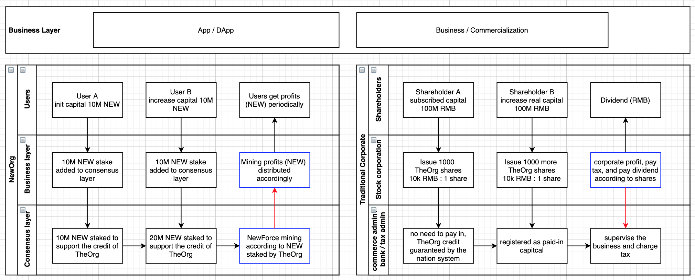
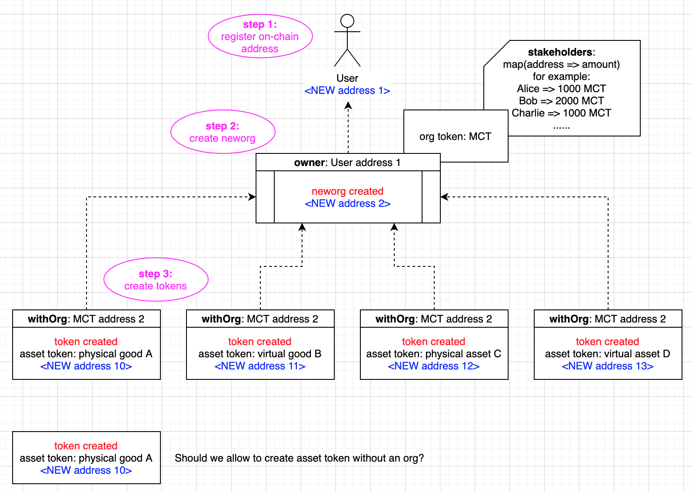
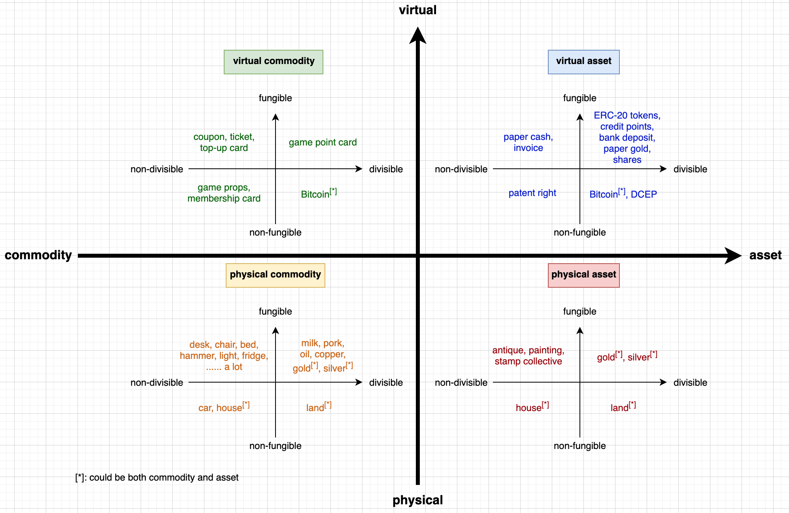

NEP 12: NewORG Standard (NRC-12)
View on Github (https://github.com/newtonproject/NEPs/blob/master/neps/nep-0012.md)| Author | Evan Liu, Xia Wu, Lee Willson, Zhou Xiqiao, Yong Liu, Qu Jianwei |
|---|---|
| Discussions To | https://github.com/NewORG-Standard-Group/NEPs/issues/1 |
| Status | Draft |
| Category | Technical |
| Created | 2020-04-23 |
| Updated | 2020-06-16 |
Simple Summary #
NewOrg template standard represents the living organization in newton ecosystem and a new DAO paradigm for the next generation social governance and collaboration.
Abstract #
NewOrg methods and standard based on NewChain and smart contract technologies are defined as is:
- based on NewChain and its smart contract technologies.
- to replace the traditional limited corporation with new governance paradigm based on blockchain technologies.
- to define a set of meta rules for organization governance, and clarify the separation of these rules between NewChain layer and contract layer to implement: (1) business irrelative meta rules; (2) flexibility of neworg governance token; (3) anchoring all neworg to NewChain.
- compatible with staking nodes as well as NewForce incentivization model in current NewPay for easier migration.
- a complete open standard for any organization, institution, goverments to create NewOrg and transfer the centralized trust to the decentralized infrastructure and trust.
Motivation #
To replace the traditional limited corporation with new governance paradigm based on blockchain technologies, illustrated as below:

Specification #
Meta Data #
The meta data functions are constant methods that returns information. Parameters all have a leading _.
orgInfo #
returns the informaiton of the Org:
- _name, the name of the Org
- _type, the type of the Org
- 1 - Commercial Instituation
- 2 - Community Group
- 3 - Government Sector
- 4 - Non-profit Organization
- 5 - Developer Community
- _description
- _countryRegion
- _url, the website of the Org
- _managementFee, %, ranging 0-100, of mining profits that would be attributed to the Org owner
function orgInfo() public view returns (string _name, uint8 _type, string _description, string _contryRegion, string _url, uint8 _managementFee)
totalStaking #
returns the total staking amount of NEW (unit: ISSAC) of the Org.
function totalStaking() public view returns (uint256 _amount)
stakingAmountOf #
returns the staking amount of a specific address which is a partner of the Org.
function stakingAmountOf(address _partner) public view returns (uint256 _amount)
versionTag #
returns the versionTag (e.g. “0.1.0”) of the Org.
function versionTag() public view returns (string _versionTag)
owner #
returns the owner address of the Org.
function owner() public view returns (address _owner)
countOfMember #
returns the count of members of the Org.
function countOfMember() public view returns (uint256 _count)
isMember #
returns if the given address is the member of the Org.
function isMember(address _person) returns (bool _isMember)
Interaction / Functions #
The interaction functions are methods that would change the states.
modifyOrgInfo #
modifies the information of the Org (refer to orgInfo() above).
function modifyOrgInfo(string _name, uint8 _type, string _description, string _contryRegion, string _url, uint8 _managementFee)
increaseStaking #
increases the total staking amount for the caller itself.
function increaseStaking() payable
increaseStakingFor #
increases the staking amount for someone else.
funciton increaseStakingFor(address _stakeholder) payable
decreaseStaking #
decreases the staking amount of the caller.
function decreaseStaking()
joinOrg #
joins the Org (as the caller).
function joinOrg()
exitOrg #
exits the Org (as the caller).
function exitOrg()
Rationale #

Asset Token Matrix #
Possible asset tokens could be formulated with the following Boston matrix:

Test Cases #
TBD
Implementation #
TBD
TBD #
Org token is removed from the original version and it should be considered later.
References #
Copyright #
Copyright and related rights waived via CC0.